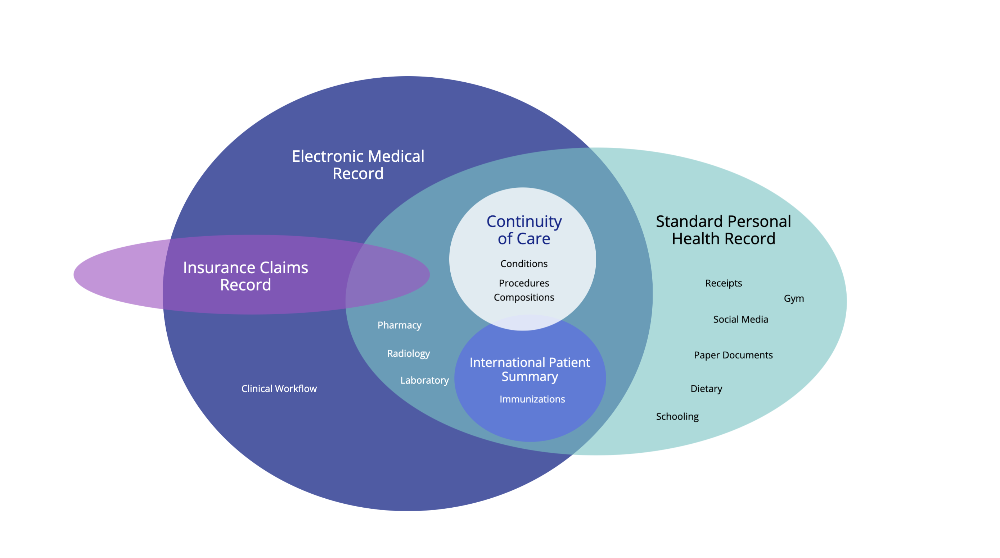

Personal Health Records
1.0.0-ballot2 - STU 1 ballot

Personal Health Records
1.0.0-ballot2 - STU 1 ballot

Personal Health Records - Local Development build (v1.0.0-ballot2) built by the FHIR (HL7® FHIR® Standard) Build Tools. See the Directory of published versions
| Official URL: http://hl7.org/fhir/uv/phr/ImplementationGuide/hl7.fhir.uv.phr | Version: 1.0.0-ballot2 | ||||
| IG Standards status: Trial-use Active as of 2026-03-12 | Maturity Level: 1 | Computable Name: PatientHealthRecordsIG | |||
The purpose of this implementation guide is to help the reader implement a Patient Health Record (in a programming language of their choice). The notion of a Patient Health Record (PHR) grows out of the concept of an Electronic Medical Record (EMR). The major difference being in ownership. The PHR being owned by the patient; and the EMR being owned by the hospital.
The following document will offer design guidance and standardized APIs for helping you develop your application; based on the healthcare industry standard of Fast Healthcare Interoperability Resources (FHIR). The scope of this document does not attempt to prescribe how you, the implementor, ought to go about programming your software. What it does provide, is guidance on how to successfully exchange data with other PHR and EMR apps. In effect, it documents widely supported (and government recognized) data standards and file formats for importing/exporting data into your software.
Readers are encouraged to think of this implementation guide as a marathon, not a sprint. To further the analogy, the authors of this guide hope to help software implementor plan on whether they are competing in a 26 mile standard marathon, a 50 mile ultramarathon, or an Iron Man triathalon. Similarly, implementing a complete PHR is no simple task, and in many situations may take upwards of a year of time or more to complete. We hope to provide guidance that will help implementors strategically plan their implementations and avoid common stumbling blocks.
Nearly two decades ago, the Markle Foundation's Personal Health workgroup convened to discuss the state-of-the-art in managing personal health information. The workgroup defined the PHR as "an electronic application through which individuals can access, manage and share their health information, and that of others for whom they are authorized, in a private, secure, and confidential environment." Their early vision was that PHRs would enable individuals to access and coordinate comprehensive, lifelong health information and exchange necessary parts of it.

The core of the Personal Health Record should be medical grade, and able to incorporate any medical record that you receive after a visit to the hospital; and which the patient can then carry from one healthcare provider to the next. As such, a modern Personal Health Record needs to essentially be able to receive captured data from throughout the hospital. Emergency room, operating room, intensive care unit, laboratory, pharmacy, nursery, psychiatry. All of it is relevent." to "The purpose of this specification is to provide standard mechanisms for a PHR to interoperate, facilitating sharing of information obtained by the PHR from healthcare encounters, personal documentation and measurement, and other sources.
The diagram above shows the intersection of the data collected by the patient, compared to the data collected by the hospital EHR or insurance systems.
| Country | Initiative / Law | Type | FHIR/API Integration |
|---|---|---|---|
| Netherlands | MedMij Framework | Policy/Standard + Certification | Yes (HL7 FHIR) – MedMij defines FHIR-based APIs; all certified PHRs use these standard APIs. |
| PGO Personal Health Environments (apps) | Private PHR Platforms (gov’t backed) | Yes – Must be MedMij-certified; patients access data via DigiD login and FHIR APIs. | |
| Australia | My Health Record (MyHR) | Government-run National PHR | Partial – Transitioning from CDA to FHIR-based APIs via FHIR Gateway for consumer access. |
| National Digital Health Strategy | Policy/Strategy | Yes – Emphasizes HL7 FHIR alignment; publishes FHIR implementation guides. | |
| Japan | MynaPortal Health Access | Government portal & APIs | Yes – APIs link MynaPortal with private PHRs; using FHIR for new infrastructure. |
| Medical DX/Data Health Plans | National Policy | Yes – Standardizing EMR data and enabling patient access; includes SMART Health Cards (FHIR). | |
| Personal Information Protection Commission | National Law | Not specifically. Only specifies handling of personal data and patient data ownership. | |
| Act on the Protection of Personal Information | National Law | Not specifically. Only specifies handling of personal data and patient data ownership. | |
| United States | 21st Century Cures Act & ONC/CMS Rules | Federal Laws/Regulations | Yes – Mandates HL7 FHIR APIs (US Core profiles); SMART on FHIR widely implemented. |
| Blue Button 2.0 / Apple Health Records | Government & Private Platforms | Yes – FHIR-based APIs for claims and provider data; app ecosystem supports FHIR APIs. | |
| Canada | Connected Care Act (Bill C-72, 2024) | Proposed Federal Law | Yes (Planned) – Would mandate interoperable systems; aligns with Pan-Canadian FHIR specs. |
| Provincial Portals / Pan-Canadian FHIR Profiles | Patient portals / Standards | Partial – Web portals exist; FHIR-based standards in adoption phase. | |
| UK (England) | NHS App & GP Record Access | NHS-operated Digital Services | Yes – NHS APIs (e.g., GP Connect) use FHIR; patients access data via NHS App. |
| CareConnect FHIR Profiles / Patients Know Best | National Profiles / Private PHR | Yes – Profiles define FHIR structures; private apps integrate via NHS APIs. | |
| Germany | Patient Data Protection Act (PDSG) / ePA | National Law & PHR Platform | Partial – Currently uses CDA/IHE XDS; migrating to HL7 FHIR (ePA 2.0, Basisprofil DE). |
| Finland | Kanta PHR | Government PHR platform | Yes – Fully HL7 FHIR-based with open APIs; apps write to/read from PHR using Finnish FHIR profiles. |
| Taiwan | My Health Bank | National PHR Portal (NHI) | Partial – APIs/SDK provided; transitioning toward FHIR from legacy HL7 standards. |
| India | Ayushman Bharat Digital Mission (ABDM) | National Health IT Framework | Yes – HL7 FHIR adopted as primary exchange standard; personal consent-based PHR model. |
The core of the Personal Health Record should be medical grade, and able to incorporate any medical record that you receive after a visit to the hospital; and which the patient can then carry from one healthcare provider to the next. As such, a modern Personal Health Record needs to essentially be able to receive captured data from throughout the hospital. Emergency room, operating room, intensive care unit, laboratory, pharmacy, nursery, psychiatry. All of it is relevent.
This guide is particularly interested in the problem of collecting and aggregating medical records from multiple healthcare systems and devices into a coherent whole. In the healthcare industry, these types of compiled records are known as longitudinal records.
Longitudinal Health Records - Assembly of records over a long time span; generally multiple decades (20 years or more), and possibly from different healthcare systems with different practices or standards of care.
Longitudinal Studies - Clinical studies that follow up on patient results after 20 or more years. Very important for pediatric studies.
Snowbirds - Many patients have more than one home location, and may spend time in different parts of the country on a seasonal basis. This leads to medical records that are fragmented.
Symptom Tracking - Symptoms of an illness can evolve as the condition improves or worsens, impacted by such things as climate or diet or circumstances of life.
Long COVID - An example of an ongoing longitudinal study that has captured national and worldwide attention, as we continued to determine the long-term effects of COVID-19.
Multiple Chronic Conditions - Not all medical conditions are reported to all healthcare providers. Conversely, specialists will report results for one area of medicine, which needs to be incorporate and reconciled with the patient's master record.
Differential Diagnoses - Case presentation for rare diseases can require differential diagnosis, as clinicians generate hypotheses and tests for one condition after another to explain a set of symptoms.
Alternative Care - Massage, Acupuncture, etc. - Patients may wish to track alternative modalities of healthcare that are not recognized or tracked by a healthcare provider or network.
Bring Your Own Device - Patients may wish to utilize consumer medical devices for tracking their own health.
Foster Care System - Custody and care of foster children, especially when it crosses state lines, can be complicated; requiring detailed record keeping to align both medical and court proceedings.
Migrants/Immigrants - Patients that have immigrated will necessarily have fragmented records that exist in multiple locations or countries.
Climate Refugees - Patients that have been forced to relocate, due to fires, floods, and similar events, will likely have medical records in multiple clinics or hospitals.
Copyright (c) 2021+ Health Level Seven International and MITRE.org.
Published under the Creative Commons "Attribution 4.0 International" (CC BY 4.0) License
| IG | Package | FHIR | Comment |
|---|---|---|---|
  Personal Health Records Personal Health Records | hl7.fhir.uv.phr#1.0.0-ballot2 | R4 | |
 HL7 Terminology (THO) HL7 Terminology (THO) | hl7.terminology.r4#7.1.0 | R4 | Automatically added as a dependency - all IGs depend on HL7 Terminology |
  FHIR Extensions Pack FHIR Extensions Pack | hl7.fhir.uv.extensions.r4#5.2.0 | R4 | |
| International Patient Summary Implementation Guide | hl7.fhir.uv.ips#1.1.0 | R4 | |
 HL7 Terminology (THO) HL7 Terminology (THO) | hl7.terminology.r4#5.0.0 | R4 | |
| fhir.dicom | fhir.dicom#2022.4.20221006 | R4 | |
![.]( "NPM Package IG Dependency") FHIR Tooling Extensions IG FHIR Tooling Extensions IG | hl7.fhir.uv.tools.r4#0.9.0 | R4 | for example references |
Package hl7.fhir.uv.extensions.r4#5.2.0 This IG defines the global extensions - the ones defined for everyone. These extensions are always in scope wherever FHIR is being used (built Mon, Feb 10, 2025 21:45+1100+11:00) |
Package hl7.fhir.uv.ips#1.1.0 International Patient Summary (IPS) FHIR Implementation Guide (built Tue, Nov 22, 2022 03:24+0000+00:00) |
Package hl7.fhir.uv.tools.r4#0.9.0 This IG defines the extensions that the tools use internally. Some of these extensions are content that are being evaluated for elevation into the main spec, and others are tooling concerns (built Tue, Dec 16, 2025 23:18+1100+11:00) |
There are no Global profiles defined
This is an R4 IG. None of the features it uses are changed in R4B, so it can be used as is with R4B systems. Packages for both R4 (hl7.fhir.uv.phr.r4) and R4B (hl7.fhir.uv.phr.r4b) are available.
This publication includes IP covered under the following statements.
IG © 2022+ HL7 International / Patient Empowerment.
Package hl7.fhir.uv.phr#1.0.0-ballot2 based on FHIR 4.0.1.
Generated
2026-03-12
Links: Table of Contents |
QA Report
| Version History |
 |
Propose a change
|
Propose a change